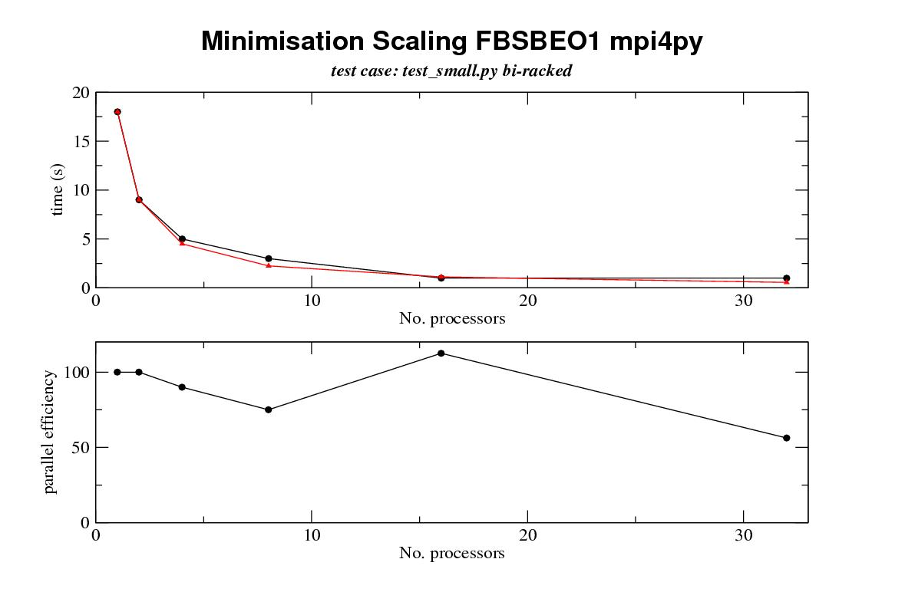

|
Dear All I have now had a chance to do some true multi tasking on our local cluster with real overhead from intreprocess communication and the results are as follows processors min eff mc eff grid eff 1 18 100 80 100 134 100 2 9 100 4 5 90 8 3 75 16 1 112.5 32 1 56.25 8 31.25 4 104.6and the picture that speaks 1000 words  key top graph black line achieved runtimes top graph red line expected runtimes with perfect scaling efficency bottom graph scaling efficiency some notes 0. data was collected on one of chris's small data sets containing 28 residues not all of which are active for minimisation columns processors - no slave mpi processors min - time for a minimisation of models m1-m9 with a fixed diffusion tensor eff - approximate parallel efficiency expected runtime/ actual runtime mc - 256 monte carlo calculations eff - efficiency of the above grid - a grid search on a anisotropic diffusion tensor 6 steps eff - efficency of the above tests were run on a cluster of opterons using gigabit ethernet and mpi 1. these results are crude wall times as measured by pythons time.time function for the master but they do not include startup and shutdown overhead 2. these tests are single point measurements there are no statistics 3. timings were rounded to 1 second, so for example we must consider data points for more than 16 processors for the min run to be suspect The results also highlight up some interesting considerations 1 our local cluster has very poor disk io, with the result that when i first ran the calculations I saw no multiprocessor imporvements on the min run (in actual fact it got worse!) I got round this for this crude test by switching off virtually all text output from the various minimisation commands. Now obviously this isn't a long term solution but I can thing of other methods e.g using an output thread thread on the master or output batching that would improve these results. 2. comparison of the results from the grid calculation and the other calculations are quite informative. clearly the grid results are excellent. I believe this is because I am returning individual subtask results to the master as they complete and the resulting overhead due to waiting for the master is a problem. To make this (clearer?) here is an example: in the case of the mc run I will take the 256 mc runs and distribute a batch of 8 to each processor (in the case of a 32 processor run) I then resturn the results individually as they complete I believe this can lead to access to the master being the bottleneck (this is most probably due to output ovrehead on stdout again, though problems with contention due to coherence of the calculation length could also be a problem ). In the case of the grid there are no subtasks as the grid is almost ideally sub divided by processor so only one task is run on each slave. I can see at least two answers to this. One is to batch the return of results so all results get returned at once and the second is to have an output thread on the master separate from the thread ervicing mpi calls so processing of returned data doesn't block the master and thus the rest of the cluster. I have some more comments to follow on the design of the current minimisation interface, how text output from the commands is controlled, and unit testing but these will have to follow in another message later on regards gary n.b. if the pciture doesn't dsiplay well my apolergi -- ------------------------------------------------------------------- Dr Gary Thompson Astbury Centre for Structural Molecular Biology, University of Leeds, Astbury Building, Leeds, LS2 9JT, West-Yorkshire, UK Tel. +44-113-3433024 email: garyt@xxxxxxxxxxxxxxx Fax +44-113-2331407 ------------------------------------------------------------------- |